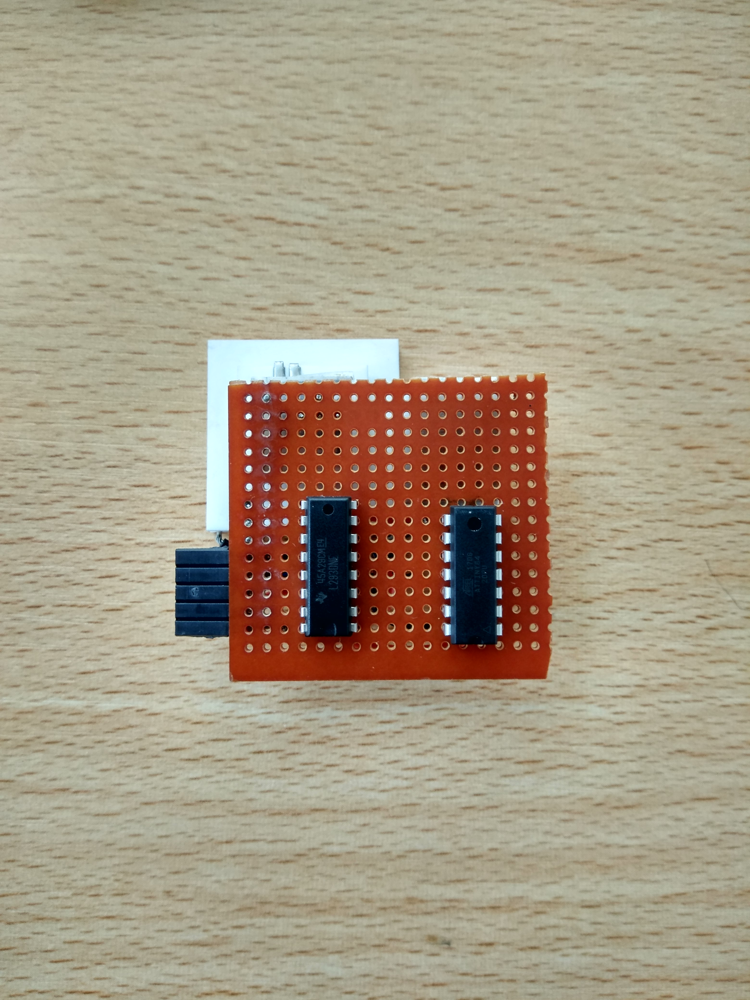
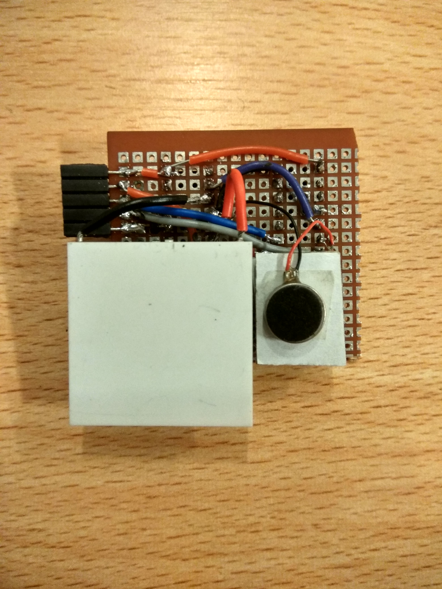
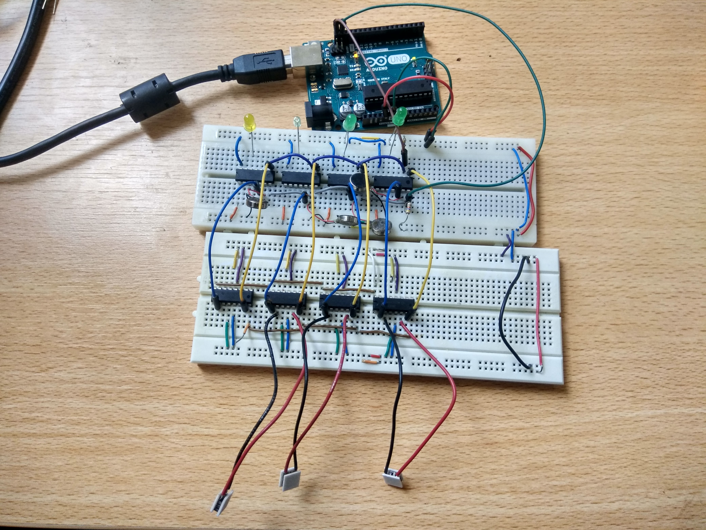

Research Question: How is emotional perception affected when vibrotactile touch patterns are combined with the thermal modality?
WHAT ARE TACTIBITS?
Tactibits are tactile bits that can be arranged on the body to perform patterns like stroke, rub, hit, poke, etc. Each tactibit imitates the warmth and pressure felt through human touch. A software was designed on Unity to conduct a user experiment to test users’ emotional responses on the circumplex model of emotions. To answer this question, a novel concept called Tactibits was developed. Tactibits are tactile bits that can be arranged on the body to perform patterns like stroke, rub, hit, poke, etc. Each tactibit imitates the warmth and pressure felt through human touch. A software was designed on Unity to conduct a user experiment to test users’ emotional responses on the circumplex model of emotions.
Guide: Dr Eric Lecolinet, Marc Teyssier at Telecom ParisTech, France
  